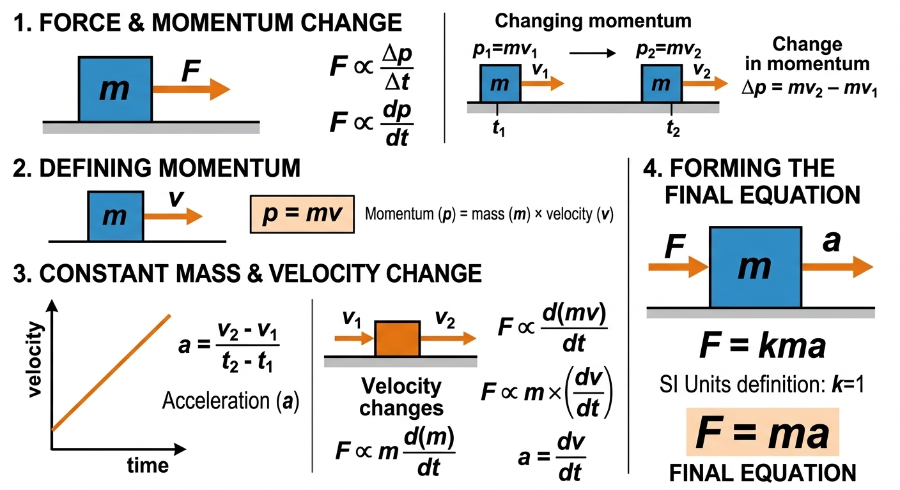

Force is ush or pull caused due to interaction between objects which causes change in motion,direction or shape. it is vector quantity which means it needs both magnitude and direction. it's SI unit is Newton(N).
Force is defined as a push or pull acting on an object.
Force is used in our everyday life like when you open a door it is using force from your hand. There are 3 effects of force, which are:-
Force needs both magnitude and direction,which means it needs numeric value•unit and direction towards it is applied. It is represented like FA->B, here F is magnitude and A->B means force is applied from A to B.
There are mainly two types of forces contact and non-contact.
Force that can be produced only when two objects are in direct contact i.e. touching each other
When we keep a object on any solid object, the solid object produces a force, that force is known as Normal force. If this force was not there then there would be a constant acceleration on solid object.
When two objects slide agaist each other it causes friction, it is more if the objectt is rough. If this force was not there we could not be able to walk,run,drivr cars.
When any object is hung with string or rope,the string produces a force.
When a person or object applies force on any object it is known as Applied Force.
Forces which dont require direct force to alter shape,motion,direction
Force that is between two objects which pull the objects closer is known as Gravitational force.
Force caused due to movement of electric charges,current or magnetic materials within a magnetic field. It causes attraction and repulsion
When two or more forces acting on an object cancel each other cancel each other it is known as balanced force and if they dont cancel each other it is called Unbalanced force
When forces are unbalanced then their is change motion so we can say that an object at rest stays at rest and an object in motion stays in constant motion unless acted by a net external force, this is first law of motion by Newton.
Newton's Second law of motion states that acceleration of an object is directly propertional to the net force acting upon it and inversly propertional to its mass.

derivation of f=ma
When forces are in same direction then forces add while forces in opposite direction are subtracted as the force work together if they are in same direction and work against each other if they are opposite
Net force is the total force whos effect is visible.
Its SI unit is Newton(N) named after the great scientist Issac Newton, it is equal to the amount of force required to bring 1kg object in accelerationn of 1ms-2
The history of force involves a shift from Aristotle’s view that motion requires constant force, to Galileo’s understanding of inertia and friction, and finally to Newton’s,f=ma.It evolved from ancient, qualitative ideas of "natural motion" into a precise, quantitative concept, with Einstein later reinterpreting gravity as spacetime curvature rather than a traditional force.